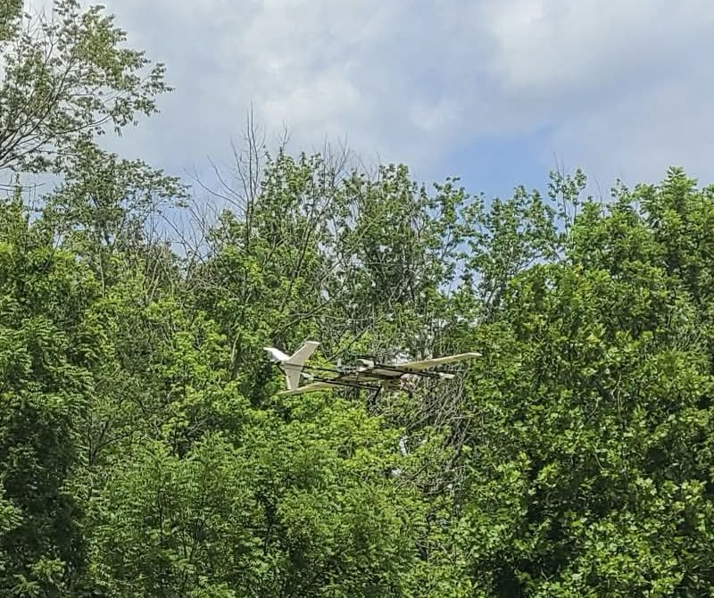
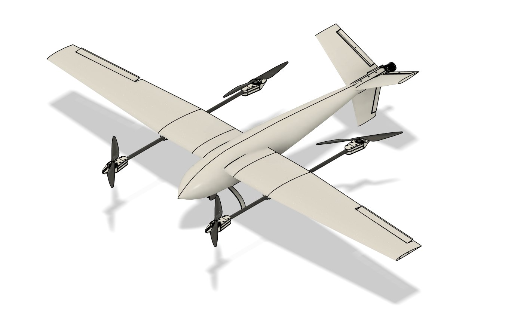
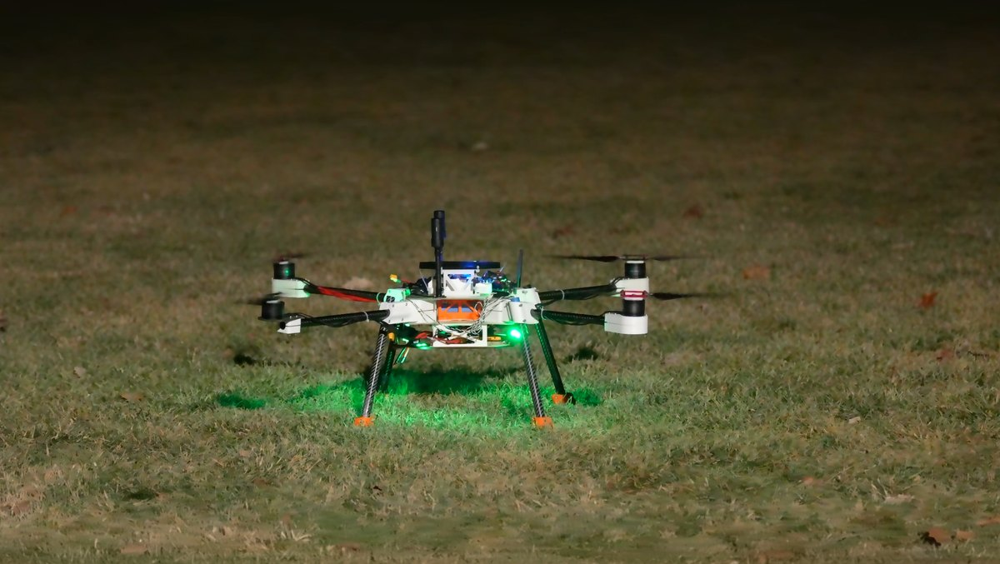
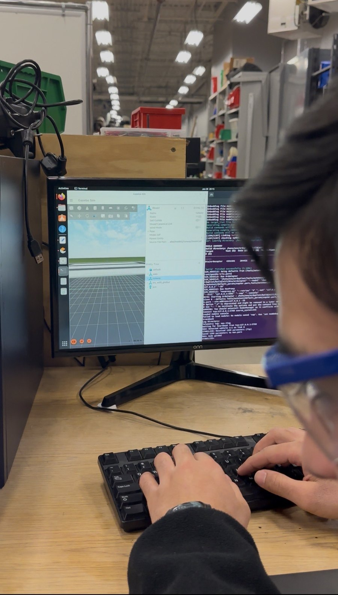

We do not jump from CAD to a full mission. New systems start in simulation or on the bench, move to MEP, and then reach MeadowHawk through short, staged flight tests. When something goes wrong, we record what happened and what changed.

MeadowHawk during VTOL flight testing. Dated results below remain tied to their individual test records.
Analytical design and major aircraft revisions
We began with estimates for wing loading, stall speed, drag, cruise thrust, hover power, and mission energy. CAD and eCalc helped us compare motors, propellers, batteries, mass, and geometry. The aircraft changed several times as real components replaced early estimates.

Multirotor Experiment Platform
Before MeadowHawk was ready, MEP carried the Pixhawk, Jetson, camera, communications hardware, and payload equipment. We used it for waypoint work, camera integration, competition-altitude image collection, and payload releases. These flights reduced integration risk, but they did not prove that the same systems were ready on MeadowHawk.

MEP2 flight test showing autonomous takeoff and a commanded payload release. It reduced payload-integration risk before MeadowHawk installation; it was not a complete MeadowHawk search-and-delivery mission.
Software-in-the-loop and ground-station testing
We connected ArduPilot SITL, Gazebo, Mission Planner, and our mission scripts to rehearse connections, arming states, mode changes, waypoint handling, and mission logic. That let us find software problems before enabling the same behavior on a real aircraft.

A yaw problem grounded MeadowHawk
An early VTOL flight developed a steady clockwise yaw. The counter-clockwise motor pair ran much hotter, and the front-left motor was damaged. We grounded the aircraft and checked the logs, motor mapping, rotation directions, ESC setup, controller allocation, wiring, mounts, and structural stiffness. The available record points to several possible contributors rather than one proven root cause.
The carbon lift structure remained H-shaped, but we changed ArduPilot from an H-frame allocation to an X-frame allocation and rechecked each motor's physical location and direction. We also installed a matched set of DJI lift motors, reinforced the arm and motor-pod structure, and repeated no-prop, restrained, hover, and temperature checks.
Follow-up checks
In follow-up records, restrained tests, short hovers, and assisted-mode flights no longer showed the persistent yaw or severe pairwise heating. The exact day-by-day sequence of those checks is still being confirmed.
Accepted one-mile proof flight
MeadowHawk flew six approximately 900-foot waypoint laps for a total of more than one mile. This was a multirotor-only autonomous mission using four DJI 4216 KV310 lift motors, three parallel 6S batteries, and ArduPilot's X-frame control allocation. The aircraft finished without manual takeover, and competition reviewers accepted the proof.
Six autonomous waypoint laps completed
More than one statute mile flown
Required Mission Planner information displayed
No manual takeover needed to finish the mission
What this flight did not prove
The proof flight did not include fixed-wing transition, mapping, live target detection, geolocation, payload delivery on MeadowHawk, or the complete competition mission.
Accepted MeadowHawk proof-flight video from July 21, 2026. The flight covered autonomous VTOL waypoint laps; it did not include fixed-wing transition or the complete search-and-delivery mission.
At TDR completion, the following tests were planned but not yet completed.
Transition and cruise
Build from manual fixed-wing checks to forward transition, cruise tuning, return transition, and vertical landing.
Mission systems
Measure mapping coverage, live detection, geolocation error, and payload-delivery accuracy before joining them into one mission.
Reliability and operations
Repeat assembly, preflight, communications, failsafe, battery, transport, and full-mission rehearsals under field conditions.
Test records
What we record after a test
For each major test, we track the date, objective, aircraft configuration, procedure, acceptance criteria, result, evidence, corrective action, and next step. That keeps a test result tied to the hardware and software that produced it.